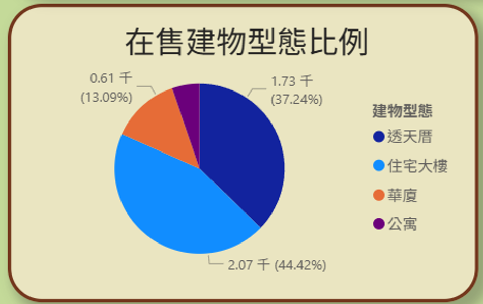

專題名稱：大台中房市分析-太平篇
指導老師：梁國亮 老師
指導老師：林叔伶 老師
學生姓名：范智軒
發表日期：2025年8月4日
大台中房市分析－太平篇
一、研究動機
我住在太平，想買房，但對房市並不熟悉，心中充滿許多疑惑：
- 現在的房價是否昂貴？
- 總價是否合理？
- 哪些區域的房屋類型較多？
- 現在有很多新房子可以選嗎？會不會都是老房子呢？
- 房仲網的價錢是不是行情價？還有議價空間嗎？
如果有人能幫我解答這些問題，那就太好了！
二、資料取得與處理流程-ETL
老師有說過:「政府提供許多公開資料，直接搜尋下載就好；沒有的，只要資料在網頁上出現，就用爬蟲技巧自己抓，沒什麼大問題。」
於是我決定，這次就把老師傳授的 ETL 整個流程 重新演繹一遍，像偵探辦案一樣，一步步把太平房市的資料拼湊完整。
1. Extract（提取）－蒐集線索
- 資料庫（MySQL、PostgreSQL、Oracle）
- API
- CSV、Excel、JSON 等檔案
- 雲端儲存（AWS S3、Google Cloud Storage）
- 日誌系統或感測器資料
我的實際操作：
- 從 不動產交易平台 下載台中市實價登錄 CSV
- 從 內政部不動產交易時價查詢服務網 下載 102Q1 至 114Q2 的歷史交易紀錄，超過 50 個檔案
- 在快速瀏覽欄位內容後，進行檔案合併
2. Transform（轉換）－整理拼圖
收集到的原始資料，還無法直接用來分析，就像一箱雜亂的拼圖，需要先分類、清洗，再拼出全貌。
- 資料型別轉換（數字、日期、布林值）
- 去除重複、補齊缺值
- 格式標準化（例如地址、電話號碼）
- 建立衍生欄位（例如：總價 ÷ 坪數 = 每坪單價）
我的實際操作：
- 把「成交年月日」改成 YYYY-MM-DD 格式
- 計算每坪價格
- 地址標準化（用程式處理，有些麻煩，但都已克服，主要是為了查詢經緯度）
- 撰寫爬蟲模擬翻頁，抓取在售物件資料(永慶房仲網)
3. Load（載入）－資料進倉
整理好的資料，就像拼好的拼圖，現在可以放進資料倉庫或分析工具，開始進行探索與視覺化。
- 資料倉儲（BigQuery、Snowflake、Redshift）
- BI 工具（Power BI、Tableau）
- 傳統資料庫（PostgreSQL、SQL Server）
我的實際操作：
- 將整理好的資料載入 Power BI
- 依分析目的建立資料行、維度表，並設定關聯
- 這裡有較多的表格建立操作，在售物件與歷史資料不合併處理，主要是為了避免資料混淆。
- 為了關聯這兩的資料表，因此需要建立以下維度資料表，以進行關聯：
三、初步成果與分析期待
我已取得了歷史資料，以及在售資料，這些資料似乎已足以解除我大部分的疑惑：
- 我能夠比對歷史價格與目前市場價格
- 知道哪些區域的房型、屋齡分布
- 確認房仲網價是否貼近市場行情
接下來，我將利用這些資料在 Power BI 中進行分析與視覺化，並透過圖表回答我最初對太平房市的所有問題。
四、台中市不動產成交趨勢
1️⃣ 年成交量－建物
- 2020 年達高峰，成交件數最高，主要受疫情、低利率影響
- 透天厝與住宅大樓是主要成交類型
- 低利率 + 錢潮寬鬆 + 投資避險需求 推升購屋熱潮
- 2021–2022：房市過熱，政府推出「打炒房」措施（信用管制、禁止換約、房地合一2.0等）
- 2023 起利率上升，買氣趨緩
2️⃣ 年成交量－行政區
北屯區與太平區成交最熱絡，2020 年達巔峰；其他行政區交易平穩
3️⃣ 成交建物型態占比
住宅大樓約占 67%，透天厝 19%，華廈 14%
4️⃣ 年度平均單價趨勢－建物
單價持續上升，透天厝最高，其次為住宅大樓；華廈價格最低，但漲幅明顯
5️⃣ 年度平均單價趨勢－行政區
北屯價格最高，太平價格較親民但漲勢穩健
6️⃣ 成交數統計
北屯成交最多，太平次之；住宅大樓為主力產品
太平區屬於「成交活躍但價格較親民」的區域，是我心中的買房首選。
五、行政區交易探討-屋齡
1️⃣ 年交易量－屋齡
- 0-5 年新屋交易量最高，2020 年最為突出
- 10 年以上老屋交易明顯偏低
- 近兩年新屋交易減少，市場趨向理性
2️⃣ 行政區熱門物件－屋齡
北屯新屋最熱，太平次之；市中心各區交易量明顯偏低
3️⃣ 年度統計洞察
到2025 年新屋仍為主力，老屋佔比不到三成
台中房市以「新屋」為主，北屯與太平最活躍
六、太平區在售物件分析
1️⃣ 在售建物型態比例

住宅大樓占比約 44%，透天厝約 37%，華廈與公寓合計不到 20%
2️⃣ 平均單價－建物
- 透天厝約 0.47 百萬/坪
- 住宅大樓約 0.35 百萬/坪
- 華廈與公寓約 0.27 百萬/坪
3️⃣ 依建坪看物件數
36-50 坪與 51-70 坪產品最多，占比超過 60%
4️⃣ 在售平均單價與歷年比較
在售價格高於歷年成交價，顯示有溢價空間；透天厝漲幅最明顯
5️⃣ 依總價看物件數
- 1000-2000 萬物件最多
- 2000 萬以上多為高總價透天
- 500 萬以下物件幾乎絕跡
七、我的分析與結論
- 相對於過去幾年的價格，現在的房價確實較高，但考量到通貨膨脹及市場需求，仍在合理範圍內。
- 整體來看，總價仍在可接受範圍內，但需依個別物件狀況而定。
- 太平區以住宅大樓與透天厝為主，北屯區則以新屋為主力。
- 目前市場上新房子與老房子都有，但新房子的比例逐漸增加。
- 房仲網的價錢通常是行情價，但實際成交價可能會有議價空間。
- 太平區在售市場以中大型住宅大樓與透天為主，房仲開價略高，有議價空間，幫助我進一步鎖定理想房型與價格帶。
九、深深的感謝您
- 謝謝林叔伶老師的指導與啟蒙，讓我在Python的學習道路上有一種熟悉感的陪伴。
- 謝謝梁國亮老師的教導，讓我在資料分析方面有了更深入的理解與啟發。
- 感謝同學們這段時間的陪伴，共同成長是很難再有的體驗。
- 感謝家人對我的支持與理解，讓我能夠專心投入這個專題。
- 人因夢想而努力，我將再次擁抱這份熱情。
十、專題檔案下載
如果您對我的專題有興趣，歡迎下載以下檔案：